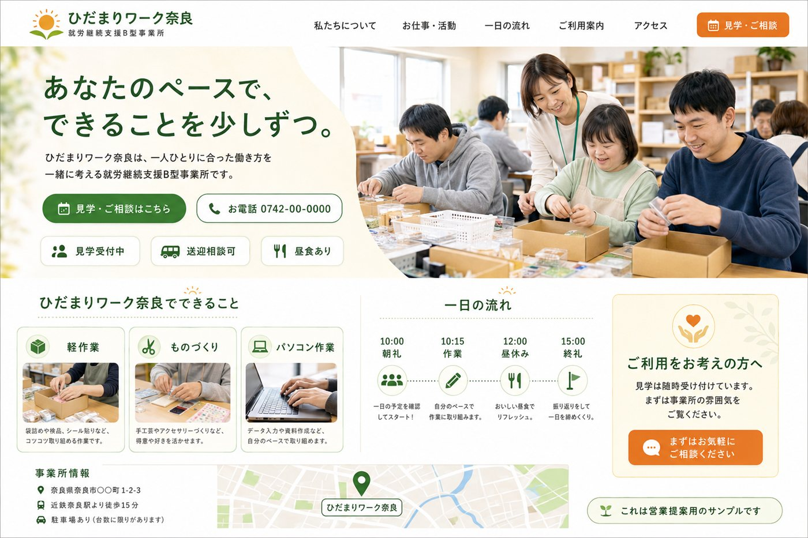

— プロジェクト進捗レポート
絆 AI-HP作成サービス ／ 開発の進みぐあい
就労継続支援B型の事業所が「HTMLを書く」のではなく「AIに話しかけて」ホームページを直せる ── そのサービスを作っています。今日は、その心臓部が“本物のAI”で初めて動いた日です。
2026年8月12日（水）
本日 5項目 完成
合同会社 絆
PRODUCT ・ 実際にできているホームページ
いま、こんなHPが自動でできています
事業所の情報を取り込むと、AIがこの品質のHPを“下書き”として自動生成します。下は営業提案用のサンプル「ひだまりワーク奈良」です。

▲ AIが自動生成したサンプルHP。写真・レイアウト・見出しは全事業所で共通のテンプレート。住所・電話などの事実情報だけが事業所ごとに自動で差し替わります。
確定した事実は自動反映名称・住所・電話・アクセスなど、取り込んだ情報はそのまま掲載されます。
未確定は「準備中」で断定しない送迎・営業時間・昼食などは、あとから事業所がAIチャットで埋めていきます。
誰が作っても同じ品質デザインは共通なので、どの事業所でも見栄えのする仕上がりになります。
TODAY ・ 今日できるようになったこと
今日、5つの前進がありました
むずかしい言葉を使わずに、「何をやったか」と「なぜ大事か」をセットで並べています。
1
Phase 3 ・ AI編集エンジン
AIが“本物”で初めて動いた（サービスの心臓部）
「営業時間を9〜16時に」「送迎あり」「昼食は500円」「配色を緑に」── こうしたふつうの日本語の指示を、AIが正しく読み取って、ホームページのデータを自動で書き換え・反映することを実際に確認しました。
意味： これがこのサービスの一番の“売り”です。事業所さんはコードを一切さわらず、話しかけるだけでHPを直せます。今は無料で使えるAIで運用を開始しています。
2
Phase 3 ・ 品質改善
AIへの“指示書”を精密にして、ミスをゼロに
AIに渡す指示書（プロンプト）に、「どんな形で書き換えを提案すべきか」を項目ごとに正確に書き加えました。これが無いとAIが自己流の形で答えてしまい、うまく反映できないことがありました。
意味： 指示のブレが無くなり、実証テストで不採用ゼロを達成。この改善はGeminiにもAnthropicにも共通で効きます。
3
Phase 5b ・ 自動メール
14日間おためし中の“リマインド自動送信”
無料おためし期間中に、3日前・前日・当日のタイミングで自動でお知らせメールを送る仕組みを作りました。同じ人に二重送信しない工夫（冪等）や、配信停止・未登録の方を自動でスキップする処理も入っています。
意味： 手作業なしで“おためし→契約”の後押しができます。実際の送信は、メール会社の契約が決まり次第つなぐだけの状態です。
4
Phase 6b ・ 公開前チェック
「この内容で公開してOK」を確認する画面
事業所さんが公開ボタンを押す前に、5項目のチェックリストで掲載内容を最終確認できる画面を作りました。全部にチェックが入って初めて公開に進めます。
意味： 「まちがった内容のまま公開してしまった」を防ぎます。確認した記録もきちんと残ります。
5
Phase 7 ・ 管理画面
成果がひと目でわかる管理ダッシュボード
都道府県ごとの成果（KPI）、見込みの高い事業所ランキング（本命スコア）、決済に失敗した先の一覧などを、1つの画面でまとめて見られるようにしました。ログインパスワードで保護しています。
意味： 「どこに営業を集中すべきか」が数字で見えます。91件の自動テストすべて合格し、動作も実データで確認済みです。
HOW IT WORKS ・ サービスの仕組み
お客さまが体験する流れ
今日動いた「AI編集」は、この流れの ③④ にあたる中心部分です。全体像で見ると位置づけが分かります。
◆ 安全のしくみ： AIは自由に何でも書き換えるのではなく、あらかじめ決めた「操作メニュー」の範囲でしか動けません。他の事業所のデータや公開状態など、触ってはいけない所には原理的に手が届かない設計です。
ROADMAP ・ 全体の進みぐあい
プロジェクト全体のチェックリスト
● 濃紺 ＝ 中核が完成ずみ。 ○ 白 ＝ 外部サービスの契約待ち（つなぐだけ）。
Phase 1 ・ 基盤／データ取り込み奈良県230件を取り込み済み・重複防止も検証ずみ
完成Phase 2 ・ ホームページ自動生成共通テンプレ＋事業所ごとのデータで下書きを自動生成
完成Phase 3 ・ AI編集エンジン（心臓部）本日、本物のAIで動作を実証・指示ミスゼロ
完成 / 本日Phase 4 ・ マジックリンク編集画面左チャット・右プレビューの編集ページ
完成Phase 5 ・ メール返信ループ受信→AI修正→自動返信の中核（無料3回まで）
完成Phase 5b ・ おためし通知の自動送信3日前・前日・当日リマインド／本日完成
完成 / 本日Phase 6 ・ 課金と公開の状態管理14日体験→決済成功で公開→解約後も静的公開は継続
完成Phase 6b ・ 公開前チェック画面5項目チェックで誤公開を防止／本日完成
完成 / 本日Phase 7 ・ 管理ダッシュボード都道府県別KPI・本命スコア・決済失敗一覧／本日完成
完成 / 本日Phase 5c ・ メール実配信＋スクショ＋営業メール会社（Resend等）の契約が決まり次第つなぐ
契約待ちPhase 6c ・ Stripe実接続実際のカード決済をつなぐ
契約待ち公開・運用（デプロイ）Neon／Vercel＋独自ドメインで本番公開
準備待ち
NEXT ・ 次に決めること
先に進むために必要な“外部サービスの契約”
仕組みはほぼ完成しています。あとは下の3つを決めれば、実際の営業・課金・公開に進めます。
① メール送受信の会社
営業メールの配信と返信の受け取りに使います（Resend／SendGrid／Postmark 等）。差し込むだけの状態です。
② 決済（Stripe）
カード登録・14日体験・5,000円公開・月額課金を実際に動かす接続。ロジックは完成ずみ。
③ 本番の公開先
ホスティング（Neon／Vercel）と独自ドメイン。ここが決まればお客さまに公開できます。